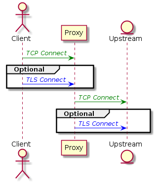
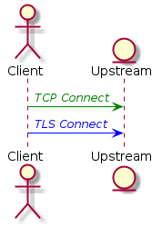
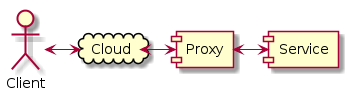
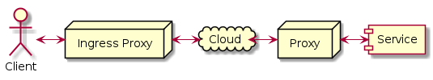

Layer 4 Proxying¶
Layer 4 proxying is proxying connections at the layer 3 or 4 level, that is at the TCP or TLS layer. This is distinct from routing in that the connections are terminated at layer 3 in Traffic Server, not by routing IP packets over the same TCP connection.
There are two primary reasons to use layer 4 proxying.
- Control of the properties, particularly TLS properties, of the connection between the client and the server.
- De facto routing of client to server connections without modification of client or server. This differs from layer 3 routing in that it applies to specific clients and servers, not packets on the network in general.
The distinguishing characteristic in both use case is how the connections are made. This becomes more complex in the case of TLS connections and where the TLS connections are terminated, which are not necessarily the same places as the TCP connections. Because the client drives the properties of the connection we can consider the connection properties from the client point of view. The two basic cases are
- Direct connection
- The client connects directly to the server. To proxy a direction connection the client must send its packets to the proxy. This can be done by adjusting DNS resolution or by adjusting the networking infrastructure must be such that packets that go between the client and the server go through the proxy. In either case the proxy must be able to able to connect to the server or at least the next upstream proxy on the way to the server based on data available in the client connection.
- Explict Proxy
- The client connects to a known proxy and then uses the
CONNECTmethod to forward the connection to the server. Adding additional proxy support will require making the client connect to a different proxy, either by configuring it to do so or by adjusting DNS resolution.
For either case the outbound connection from the client can be a “local” or “remote” connection. These cases are distinguished by whether the connection crosses network infrastructure not controlled by the same entity that controls the client. In the local case the client can depend on support from the network infrastructure (e.g. routing that prevents outside packets from entering). In contrast a remote connection must be sufficient of itself.
Use cases¶
The basic non-proxy connection.
Simple connection.¶
Adding a proxy.

Proxied connection.¶
TLS Termination¶
![actor Client
participant Proxy
entity Upstream
hide footbox
Client -[#green]> Proxy : <font color="green">//TCP Connect//</font>
Client -[#blue]> Proxy : <font color="blue">// TLS Connect //</font>
note over Proxy : Client verifies proxy provided\ncertificate as if for Upstream
Proxy -[#green]> Upstream : <font color="green">//TCP Connect//</font>
Proxy -[#blue]> Upstream : <font color="blue">// TLS Connect //</font>](_images/plantuml-b1a6665f392b8a2abbd99cbe9ce5b050ebee7797.png)
TLS Termination¶
The proxy terminates the TLS connection from the client as it it were the Service. This requires the proxy to have the private key for the Server public certificate.
Direct remote connect¶
This case assumes a direct remote connection.

Simple connection.¶
Using a proxy in this scenario can be done using transparency and routing connections through the proxy. However in most environments this level of control of the routing will not be possible and so the client will need to connect to the proxy as if it were the server. In general this will be done by tweaking DNS or reconfiguring the client. When the client connects to the proxy the proxy must in turn connect to the service. Determing the correct upstream connection is the primary challenge. The advantage of transparency is the upstream destination is indicated by the connection. For a TCP only connection from the client the upstream must be explicitly configured in the proxy. If the client connects using TLS then information can be extracted from the initial TLS handshake.
![actor Client
participant Proxy
participant Service
Client -[#green]> Proxy : <font color="green">//TCP Connect//</font>
Client -[#blue]-> Service : <font color="blue">TLS ""Client HELLO""</font>
Proxy -[#green]> Service : <font color="green">//TCP Connect//</font>
Proxy -[#blue]-> Service : <font color="blue">TLS ""Client HELLO""</font>
note right : Duplicate of <font color="blue">""Client HELLO""</font>
Client -[#blue]-> Service : <font color="blue">//TLS Connect//</font>](_images/plantuml-769257e9ec6830fa5bfaa503eeab4f0e50c63ed5.png)
TLS case¶
Remote explicit proxy¶
In this case the client does a remote proxy connection to the service.

Network Structure¶
Communications¶
If the requirement is to secure the connection from the client to the proxy this requires adding local proxy to the client, which then forwards to the remote proxy.

Adding Local Proxy¶
If the client uses TLS.